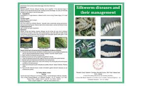

Introduction
Effective disease management ensures healthy mulberry plants, essential for successful silkworm rearing. Proper identification, prevention, and treatment of diseases maximize crop yield and quality. Our platform helps farmers adopt sustainable practices to manage diseases efficiently.
